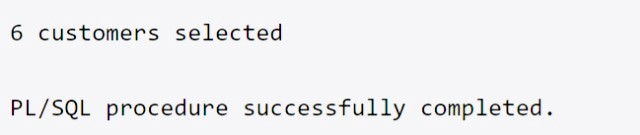
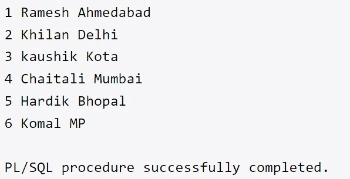
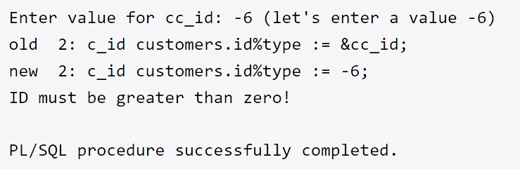

A cursor is a pointer to this context area. PL/SQL controls the context area through a cursor.
A cursor holds the rows (one or more) returned by a SQL statement.
The set of rows the cursor holds is referred to as the active set.
- CURSOR PROGRAM IN PL/SQL
DECLARE
total_rows number(2);
BEGIN
UPDATE customers
SET salary = salary + 500;
IF sql%notfound THEN
dbms_output.put_line('no customers selected');
ELSIF sql%found THEN
total_rows := sql%rowcount;
dbms_output.put_line( total_rows || ' customers selected ');
END IF;
END;
/

Explicit cursors are programmer-defined cursors for gaining more control over the context area.
An explicit cursor should be defined in the declaration section of the PL/SQL Block.
It is created on a SELECT Statement which returns more than one row.
DECLARE
c_id customers.id%type;
c_name customers.name%type;
c_addr customers.address%type;
CURSOR c_customers is
SELECT id, name, address FROM customers;
BEGIN
OPEN c_customers;
LOOP
FETCH c_customers into c_id, c_name, c_addr;
EXIT WHEN c_customers%notfound;
dbms_output.put_line(c_id || ' ' || c_name || ' ' || c_addr);
END LOOP;
CLOSE c_customers;
END;
/

EXCEPTION block in the program and an appropriate action is taken against the error condition.
There are two types of exceptions
- System-defined exceptions
PL/SQL allows you to define your own exceptions according to the need of your program.
A user-defined exception must be declared and then raised explicitly, using either a RAISE statement or the procedure DBMS_STANDARD.RAISE_APPLICATION_ERROR
DECLARE
c_id customers.id%type := &cc_id;
c_name customerS.Name%type;
c_addr customers.address%type;
-- user defined exception
ex_invalid_id EXCEPTION;
BEGIN
IF c_id <= 0 THEN
RAISE ex_invalid_id;
ELSE
SELECT name, address INTO c_name, c_addr
FROM customers
WHERE id = c_id;
DBMS_OUTPUT.PUT_LINE ('Name: '|| c_name);
DBMS_OUTPUT.PUT_LINE ('Address: ' || c_addr);
END IF;
EXCEPTION
WHEN ex_invalid_id THEN
dbms_output.put_line('ID must be greater than zero!');
WHEN no_data_found THEN
dbms_output.put_line('No such customer!');
WHEN others THEN
dbms_output.put_line('Error!');
END;
/

- User-defined exceptions
PL/SQL provides many pre-defined exceptions, which are executed when any database rule is violated by a program.
It is used when there is no data found in the table.